Cao Cao曹操
155–220
Held the line at Guandu with fewer provinces, less grain, and every decision that mattered.
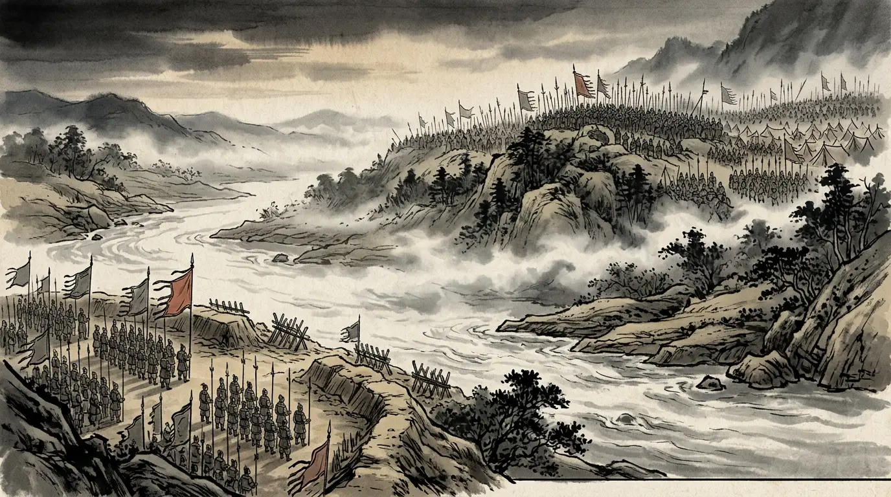
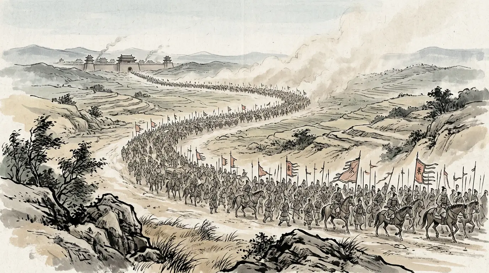
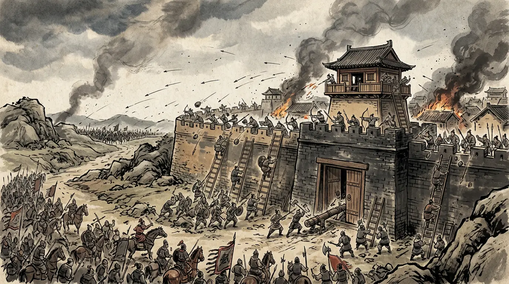
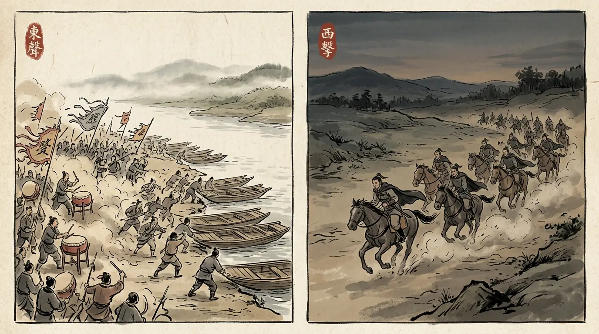
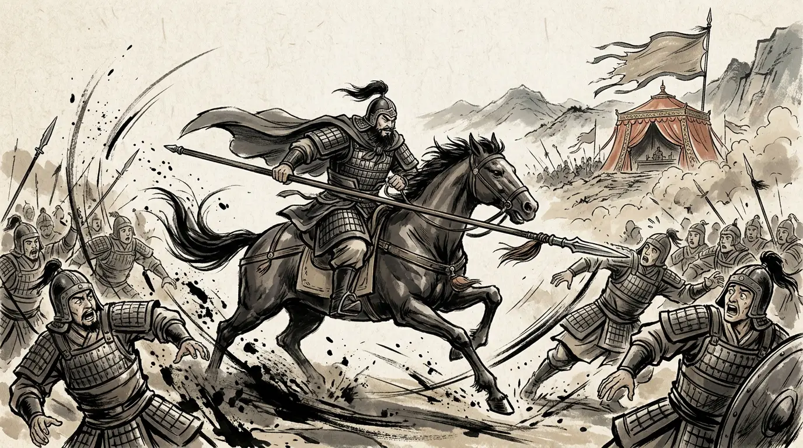
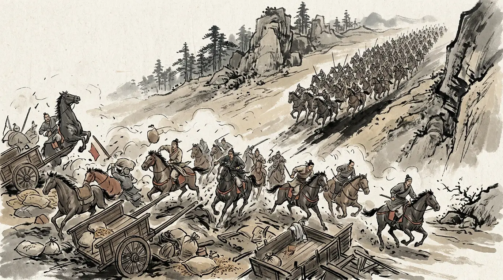
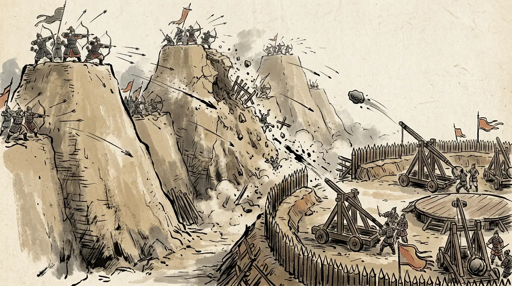
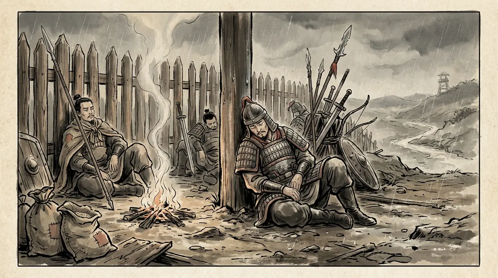
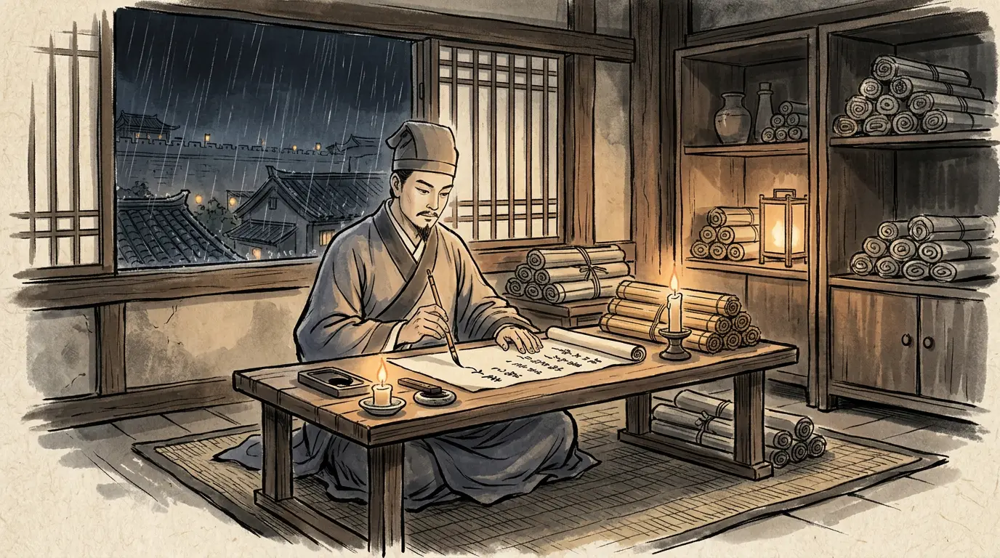
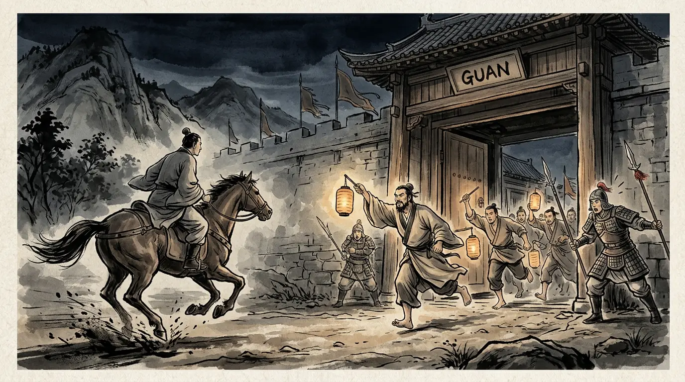
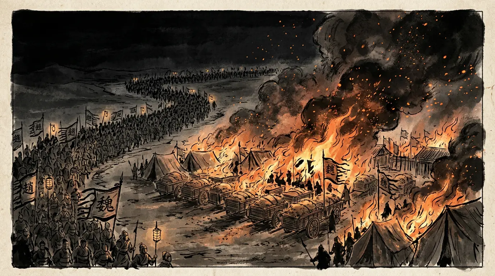
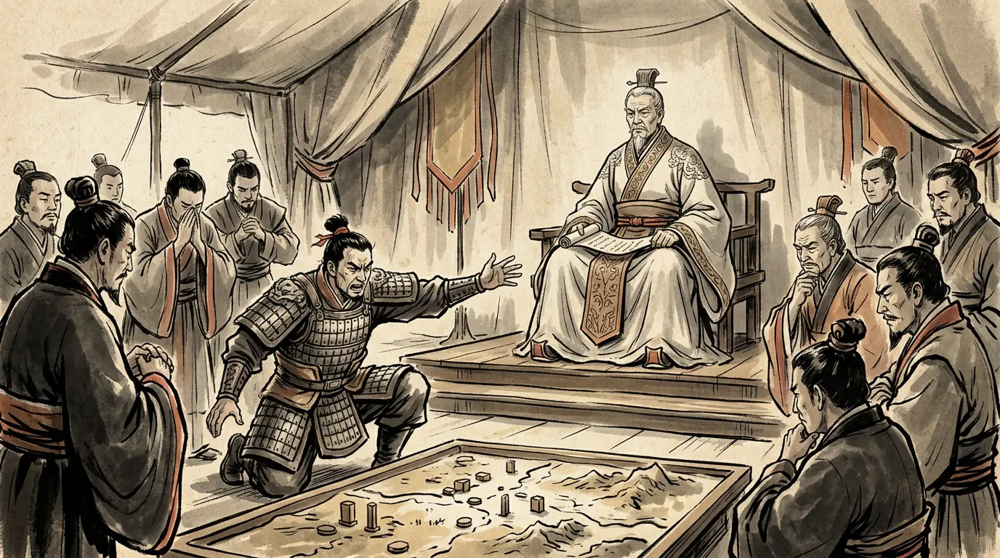
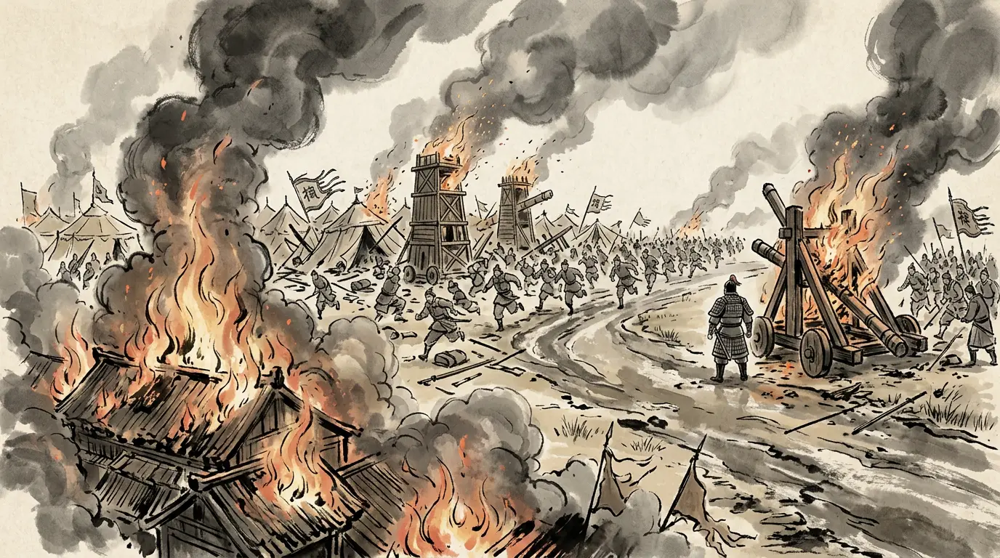
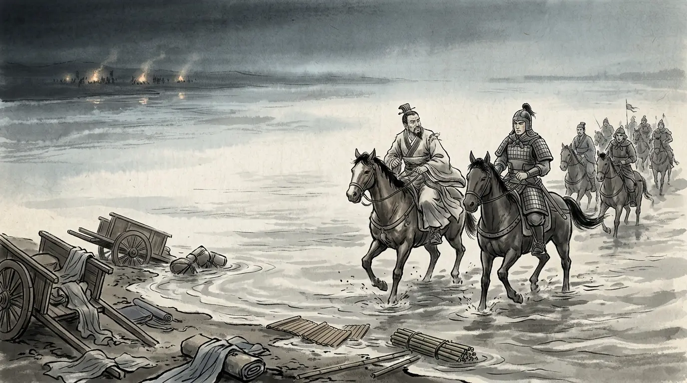
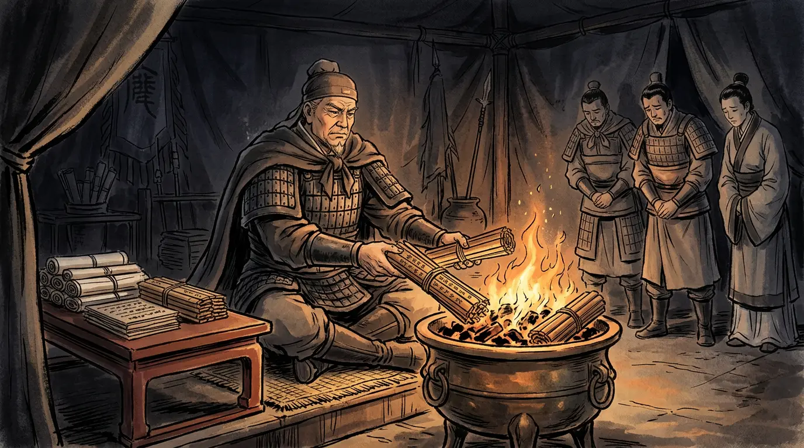
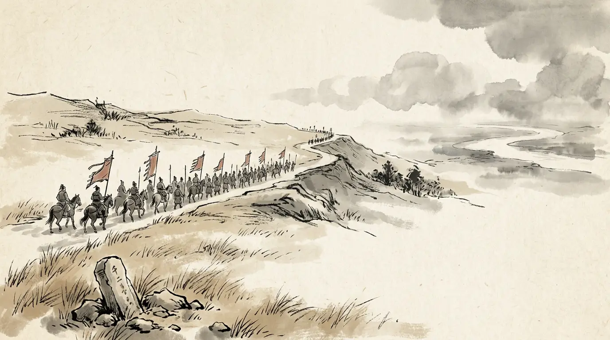
Two decision-makers carried this year — the one who could decide, and the one who could not. One sentence in a biography did the rest.


The novel Romance of the Three Kingdoms is a masterpiece — and not a source. Where its famous scenes depart from the histories, we leave them out of the story and put them here.
Guan Yu killed both Yan Liang and Wen Chou, the two great names of the north, in single combats.
The sources give Guan Yu Yan Liang, killed in the battle of Boma. Wen Chou died at Yanjin in the disorder of Cao Cao's baggage trap; the histories name no killer, and Guan Yu's own biography does not claim him.
Cao Cao won at Guandu with a handful of men against a host of a million — the eternal odds of the story.
The annals' own figure for Cao Cao (fewer than ten thousand) is disputed by Pei Songzhi, who counts the garrisons and campaigns to show it impossible; Yuan Shao's host is put at some hundred thousand in the Tongjian. The ratio is a claim in the sources, not a fact.
Xu You was a greedy clown who betrayed Yuan Shao for money and died boasting at a city gate.
The histories record a counsellor whose plan to strike Xu was refused and whose family was arrested at Ye by Shen Pei; his death came later, from insolence toward Cao Cao, not from the novel's scene of boasting at the gate.
Every caption and quotation in this episode traces to one of these. Where scholars disagree, the panel says so.
The road opened here leads south, eight years on, to Episode 1 · Fire on the Yangtze (208 CE). From there the age runs forward: Episode 3 · Fire at Yiling (222 CE), and Episode 4 · The Last Campaign (234 CE). Meanwhile — meet the cast, or read the chronology of the age.